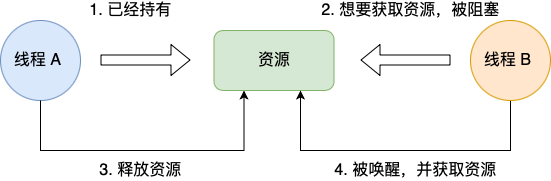
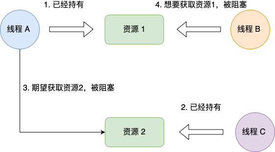
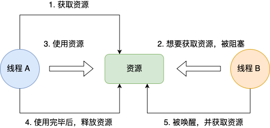
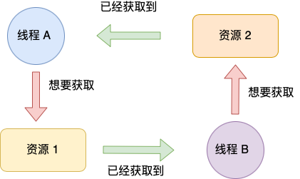
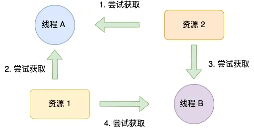
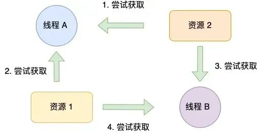
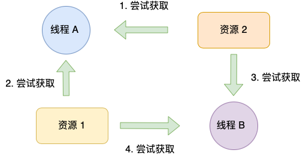
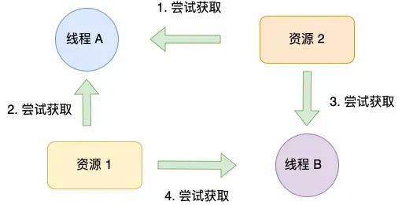
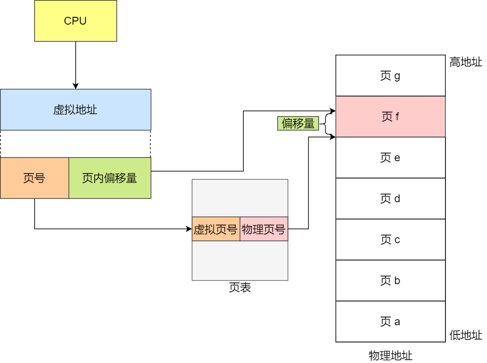
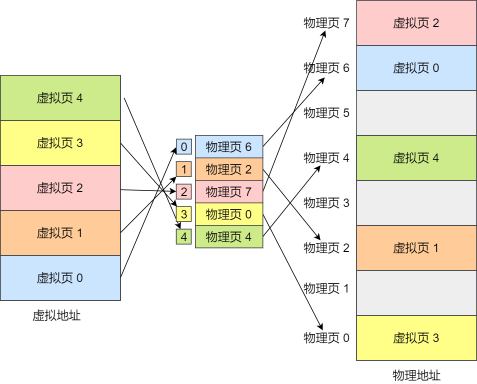

7. 什么叫服务的并行？
服务的并行指的是多个服务或任务能够同时运行、互不阻塞地处理请求，服务并行的优势主要有：
- 应对高并发：例如电商秒杀、社交平台热点事件时，用户请求激增，单一服务实例无法处理。
- 提升吞吐量：通过并行处理，单位时间完成更多任务（如批量数据处理、视频转码）。
- 增强容错性：避免单点故障，部分实例宕机不影响整体服务。
- 资源利用最大化：利用多核CPU、多节点集群的计算能力。
实现服务并行的常见的方式有：
- 单机并行：在同一台服务器上启动多个线程或进程，比如Web服务器（如Nginx）用多进程处理HTTP请求
- 分布式并行：在多台机器上部署多个服务实例，比如云计算平台通过弹性伸缩组自动增减实例。
- 任务拆分：将大任务拆分为子任务，分配给不同服务并行处理，比如MapReduce中将数据分片，多个节点并行计算后汇总结果。
- 异步通信：通过Kafka、RabbitMQ等传递任务，多个消费者并行处理，比如订单系统生成消息，库存服务和支付服务并行消费并处理。
在并发编程时，在需要加锁时，不加锁会有什么问题？
读者答：两个线程使用同一个全局变量会有不一致的问题，比如a线程把全局变量加1，b线程读的时候，如果还是从缓存中读的，那么会没有发现这个更新，就会产生不一致的问题。
多线程锁是什么
多线程锁是一种用来保护共享资源的机制。在多线程编程中，如果多个线程同时访问同一个共享资源，可能会发生竞态条件（Race Condition），导致程序的行为出现未定义的情况。为了避免这种情况的发生，可以使用多线程锁来保护共享资源。
多线程锁的基本思想是，在访问共享资源之前先获取锁，访问完成之后再释放锁。这样可以保证同一时刻只有一个线程可以访问共享资源，从而避免竞态条件的发生。
常见的多线程锁包括互斥锁、读写锁、条件变量等。其中，互斥锁用于保护共享资源的访问，读写锁用于在读多写少的情况下提高并发性能，条件变量用于线程之间的同步和通信。
10. 多线程有使用过吗？
用过，使用多线程的时候要保证多线程的允许是安全，不要出现数据竞争造成的数据混乱的问题。
Java的线程安全在三个方面体现：
- 原子性：提供互斥访问，同一时刻只能有一个线程对数据进行操作，在Java中使用了atomic和synchronized这关键字来确保原子性；
- 可见性：一个线程对主内存的修改可以及时地被其他线程看到，在Java中使用了synchronized和volatile这两个关键字确保可见性；
- 有序性：一个线程观察其他线程中的指令执行顺序，由于指令重排序，该观察结果一般杂乱无序，在Java中使用了happens-before原则来确保有序性。
怎么理解并发问题？
并发是指在同一时间段内，多个任务交替执行。在单处理器系统中，实际上这些任务是通过快速切换轮流使用处理器资源，看起来像是同时执行。而在多处理器系统中，多个任务可以真正地同时在不同的处理器核心上执行。
当多个线程同时访问和修改共享资源时，由于线程执行的顺序是不确定的，可能会导致最终的结果依赖于线程执行的顺序，这种情况就称为竞争条件。例如，在一个简单的计数器程序中，如果多个线程同时对计数器进行自增操作，由于线程切换的不确定性，可能会出现某些自增操作丢失的情况，导致最终的计数值与预期不符。
要保证多线程的允许是安全，不要出现数据竞争造成的数据混乱的问题。
Java的线程安全在三个方面体现：
- 原子性：提供互斥访问，同一时刻只能有一个线程对数据进行操作，在Java中使用了atomic和synchronized关键字来确保原子性；
- 可见性：一个线程对主内存的修改可以及时地被其他线程看到，在Java中使用了synchronized和volatile这两个关键字确保可见性；
- 有序性：一个线程观察其他线程中的指令执行顺序，由于指令重排序，该观察结果一般杂乱无序，在Java中使用了happens-before原则来确保有序性。
悲观锁和乐观锁的区别是什么？
- 乐观锁：就像它的名字一样，对于并发间操作产生的线程安全问题持乐观状态，乐观锁认为竞争不总 是会发生，因此它不需要持有锁，将比较-替换这两个动作作为一个原子操作尝试去修改内存中的变量，如果失败则表示发生冲突，那么就应该有相应的重试逻辑。
- 悲观锁：还是像它的名字一样，对于并发间操作产生的线程安全问题持悲观状态，悲观锁认为竞争总 是会发生，因此每次对某资源进行操作时，都会持有一个独占的锁，就像 synchronized，不管三七二十一，直接上了锁就操作资源了。
乐观锁是怎样实现的？
乐观锁假设多个事务之间很少发生冲突，因此在读取数据时不会加锁，而是在更新数据时检查数据的版本（如使用版本号或时间戳），如果版本匹配则执行更新操作，否则认为发生了冲突。
乐观锁适用于读多写少的场景，可以减少锁的竞争，提高并发性能。例如，数据库中的乐观锁机制可以用于处理并发更新同一行数据的情况。
乐观锁实现方式可以通过 CAS 来实现。
CAS叫做CompareAndSwap，比较并交换，主要是通过处理器的指令来保证操作的原子性，它包含三个操作数：
- 变量内存地址，V表示
- 旧的预期值，A表示
- 准备设置的新值，B表示
当执行CAS指令时，只有当V等于A时，才会用B去更新V的值，否则就不会执行更新操作。
乐观锁和悲观锁有什么区别？
乐观锁：
- 基本思想：乐观锁假设多个事务之间很少发生冲突，因此在读取数据时不会加锁，而是在更新数据时检查数据的版本（如使用版本号或时间戳），如果版本匹配则执行更新操作，否则认为发生了冲突。
- 使用场景：乐观锁适用于读多写少的场景，可以减少锁的竞争，提高并发性能。例如，数据库中的乐观锁机制可以用于处理并发更新同一行数据的情况。
悲观锁：
- 基本思想：悲观锁假设多个事务之间会频繁发生冲突，因此在读取数据时会加锁，防止其他事务对数据进行修改，直到当前事务完成操作后才释放锁。
- 使用场景：悲观锁适用于写多的场景，通过加锁保证数据的一致性。例如，数据库中的行级锁机制可以用于处理并发更新同一行数据的情况。
乐观锁适用于读多写少的场景，通过版本控制来处理冲突；而悲观锁适用于写多的场景，通过加锁来避免冲突。
1. 乐观锁悲观锁区别是什么？
- 乐观锁： 就像它的名字一样，对于并发间操作产生的线程安全问题持乐观状态，乐观锁认为竞争不总 是会发生，因此它不需要持有锁，将比较-替换这两个动作作为一个原子操作尝试去修改内存中的变量，如果失败则表示发生冲突，那么就应该有相应的重试逻辑。
- 悲观锁： 还是像它的名字一样，对于并发间操作产生的线程安全问题持悲观状态，悲观锁认为竞争总 是会发生，因此每次对某资源进行操作时，都会持有一个独占的锁，就像 synchronized，不管三七二十一，直接上了锁就操作资源了。
2. 乐观锁运用场景说一下？
乐观锁比较适合并发冲突少的场景，比如电商里的商品库存更新，平时用户下单改库存的时候，同一时间抢同一商品的情况不算太多，这时候用乐观锁就很合适。
给库存表加个版本号，每次更新前查一下版本，更新时带着版本号去改，版本对得上就成功，不用一直把数据锁着，不影响其他操作。
还有用户信息修改的场景，一般同一时间改同一个用户资料的人很少，用乐观锁比悲观锁灵活，用户改资料时不用等别人操作完，就算偶尔冲突了，重试一下就行，对用户体验影响不大。
另外像订单状态更新也常用，订单从待支付到已支付，大多时候状态变更不冲突，用乐观锁加个状态版本，能避免多个人同时操作同一订单导致的状态混乱，还能减少锁竞争，让系统处理效率更高。
总的来说，就是并发不高、冲突少，或者冲突了重试成本低的场景，用乐观锁既高效又能保证数据一致。
乐观锁如何实现，有哪些缺点？
观锁通过在更新数据时先检查数据版本号（或时间戳等），若版本号匹配则更新数据，否则拒绝更新，实现并发控制。实现方式包括：
- 添加版本字段：在数据表中增加一个版本字段，每次更新数据时增加版本号。
- 检查版本号：在更新数据时，先查询当前版本号，然后在更新时检查版本号是否匹配。
乐观锁的缺点是在高并发场景下，冲突较多，可能导致大量的重试操作。所以，在数据竞争非常激烈的环境中，乐观锁可能不太适用。
乐观锁是什么？
乐观锁 就像它的名字一样，对于并发间操作产生的线程安全问题持乐观状态，乐观锁认为竞争不总是会发生，因此它不需要持有锁，将比较-替换这两个动作作为一个原子操作尝试去修改内存中的变量，如果失败则表示发生冲突，那么就应该有相应的重试逻辑。
实现乐观锁的方式：
- CAS（Compare and Swap）操作： CAS 是乐观锁的基础。Java 提供了 java.util.concurrent.atomic 包，包含各种原子变量类（如 AtomicInteger、AtomicLong），这些类使用 CAS 操作实现了线程安全的原子操作，可以用来实现乐观锁。
- 版本号控制：增加一个版本号字段记录数据更新时候的版本，每次更新时递增版本号。在更新数据时，同时比较版本号，若当前版本号和更新前获取的版本号一致，则更新成功，否则失败。
- 时间戳：使用时间戳记录数据的更新时间，在更新数据时，在比较时间戳。如果当前时间戳小于数据的时间戳，则说明数据已经被其他线程更新，更新失败。
11. 乐观锁、悲观锁定义与适用场景是什么？
乐观锁
乐观锁假定在大多数情况下，数据在操作期间不会被其他事务修改，所以在操作数据时不会对数据加锁。只有在更新数据时，才会去检查数据在自己操作期间是否被其他事务修改过，如果没有被修改，就执行更新操作；如果被修改了，则根据不同的实现方式进行相应处理，比如重试或者抛出异常。
实现乐观锁的方式：
- 版本号机制：在表中增加一个版本号字段，每次更新数据时，版本号加 1。在更新数据前，先读取数据的版本号，在更新时将版本号作为条件进行判断，如果版本号与之前读取的一致，就更新数据并将版本号加 1；如果不一致，说明数据已被其他事务修改，更新失败。
- 时间戳机制：与版本号机制类似，只是使用时间戳来记录数据的修改时间。
乐观锁适合的场景：
- 读多写少：在这种场景下，数据被其他事务修改的概率较低，使用乐观锁可以减少加锁和解锁的开销，提高系统的并发性能。例如，商品信息的展示页面，大部分操作是读取商品信息，只有很少的操作是修改商品信息，就可以使用乐观锁。
- 冲突较少：当多个事务同时修改同一数据的情况很少发生时，乐观锁可以避免悲观锁带来的性能问题。比如，用户个人信息的修改，不同用户修改自己信息的冲突概率较低，适合使用乐观锁。
悲观锁
悲观锁认为数据在操作期间很可能会被其他事务修改，所以在操作数据前就对数据加锁，防止其他事务对数据进行修改。只有当持有锁的事务操作完成并释放锁后，其他事务才能对数据进行操作。
悲观锁的实现方式：
-
数据库层面：在数据库中，可以使用
SELECT ... FOR UPDATE语句对查询的数据加排他锁，这样在事务提交之前，其他事务无法对这些数据进行修改。 -
编程语言层面：在 Java 中，可以使用
synchronized关键字或者ReentrantLock类来实现悲观锁。
悲观锁适用的场景：
- 写多读少：在这种场景下，数据被多个事务同时修改的概率较高，使用悲观锁可以保证数据的一致性，避免数据冲突。例如，银行账户的资金操作，涉及到大量的资金转入和转出操作，需要使用悲观锁来保证数据的准确性。
- 冲突较多：当多个事务频繁修改同一数据时，悲观锁可以避免乐观锁因冲突导致的重试操作，减少系统的开销。比如，库存管理系统中，多个订单同时减少库存的情况，使用悲观锁可以确保库存数据的一致性。
12. 乐观锁里版本号校验流程是怎样的？
在数据库表中添加一个版本号字段（通常为整数类型），用于记录数据的版本信息。例如，有一个products表，存储商品信息，可添加一个version字段：
CREATE TABLE products (
id INT PRIMARY KEY,
name VARCHAR(255),
price DECIMAL(10, 2),
version INT DEFAULT 0
);
当要对数据进行更新操作时，首先需要从数据库中查询出要操作的数据及其当前版本号。例如，要更新id为 1 的商品信息：
SELECT id, name, price, version
FROM products
WHERE id = 1;
假设查询结果为：
| id | name | price | version |
|---|---|---|---|
| 1 | 手机 | 5000 | 0 |
在应用程序中对查询到的数据进行业务处理。例如，将商品价格从 5000 元调整为 5500 元。
在更新数据时，将版本号作为条件进行判断。如果版本号与之前查询时的版本号一致，说明数据在操作期间没有被其他事务修改，更新数据并将版本号加 1；如果版本号不一致，说明数据已被其他事务修改，更新失败。更新语句如下：
UPDATE products
SET name = '手机', price = 5500, version = version + 1
WHERE id = 1 AND version = 0;
执行更新语句后，需要检查更新操作影响的行数。如果影响的行数为 1，说明更新成功；如果影响的行数为 0，说明版本号校验失败，数据在操作期间已被其他事务修改。
乐观锁悲观锁区别？
- 乐观锁：从乐观的角度出发，它假定在大多数情况下，数据在被访问期间不会被其他线程修改。所以，在进行数据操作时，它不会先对数据加锁，而是在更新数据时检查数据是否被其他线程修改过。若未被修改，就执行更新操作；若已被修改，则采取相应的处理措施，例如重试或者抛出异常。适用于读多写少的场景，例如电商系统中的商品库存查询和更新。在这种场景下，大多数操作是查询商品库存，只有少数操作是更新库存，使用乐观锁可以提高系统的并发性能。
- 悲观锁：秉持悲观的态度，它认为数据在被访问过程中极有可能被其他线程修改。因此，在进行数据操作前，它会先对数据加锁，防止其他线程对数据进行访问和修改，直到操作完成并释放锁。适用于写多的场景，例如银行系统中的账户转账操作。在这种场景下，数据的一致性非常重要，使用悲观锁可以确保在转账过程中，账户数据不会被其他线程修改。
乐观锁和悲观锁及使用场景？
乐观锁：
- 基本思想：乐观锁假设多个事务之间很少发生冲突，因此在读取数据时不会加锁，而是在更新数据时检查数据的版本（如使用版本号或时间戳），如果版本匹配则执行更新操作，否则认为发生了冲突。
- 使用场景：乐观锁适用于读多写少的场景，可以减少锁的竞争，提高并发性能。例如，数据库中的乐观锁机制可以用于处理并发更新同一行数据的情况。
悲观锁：
- 基本思想：悲观锁假设多个事务之间会频繁发生冲突，因此在读取数据时会加锁，防止其他事务对数据进行修改，直到当前事务完成操作后才释放锁。
- 使用场景：悲观锁适用于写多的场景，通过加锁保证数据的一致性。例如，数据库中的行级锁机制可以用于处理并发更新同一行数据的情况。
乐观锁适用于读多写少的场景，通过版本控制来处理冲突；而悲观锁适用于写多的场景，通过加锁来避免冲突。
乐观锁和悲观锁及使用场景？
乐观锁：
- 基本思想：乐观锁假设多个事务之间很少发生冲突，因此在读取数据时不会加锁，而是在更新数据时检查数据的版本（如使用版本号或时间戳），如果版本匹配则执行更新操作，否则认为发生了冲突。
- 使用场景：乐观锁适用于读多写少的场景，可以减少锁的竞争，提高并发性能。例如，数据库中的乐观锁机制可以用于处理并发更新同一行数据的情况。
悲观锁：
- 基本思想：悲观锁假设多个事务之间会频繁发生冲突，因此在读取数据时会加锁，防止其他事务对数据进行修改，直到当前事务完成操作后才释放锁。
- 使用场景：悲观锁适用于写多的场景，通过加锁保证数据的一致性。例如，数据库中的行级锁机制可以用于处理并发更新同一行数据的情况。
乐观锁适用于读多写少的场景，通过版本控制来处理冲突；而悲观锁适用于写多的场景，通过加锁来避免冲突。
死锁条件是什么？
死锁只有同时满足以下四个条件才会发生：
- 互斥条件：是指多个线程不能同时使用同一个资源。
- 持有并等待条件：指当线程 A 已经持有了资源 1，又想申请资源 2，而资源 2 已经被线程 C 持有了，所以线程 A 就会处于等待状态，但是线程 A 在等待资源 2 的同时并不会释放自己已经持有的资源 1。
- 不可剥夺条件：指当线程已经持有了资源 ，在自己使用完之前不能被其他线程获取，线程 B 如果也想使用此资源，则只能在线程 A 使用完并释放后才能获取。
- 环路等待条件：指的是在死锁发生的时候，两个线程获取资源的顺序构成了环形链。
12. 死锁是怎么发生的？
回答：四个必要条件和银行家算法（上课学过）
小林补充
死锁问题的产生是由两个或者以上线程并行执行的时候，争夺资源而互相等待造成的。
死锁只有同时满足互斥、持有并等待、不可剥夺、环路等待这四个条件的时候才会发生。
互斥条件
互斥条件是指多个线程不能同时使用同一个资源。
比如下图，如果线程 A 已经持有的资源，不能再同时被线程 B 持有，如果线程 B 请求获取线程 A 已经占用的资源，那线程 B 只能等待，直到线程 A 释放了资源。

持有并等待条件
持有并等待条件是指，当线程 A 已经持有了资源 1，又想申请资源 2，而资源 2 已经被线程 C 持有了，所以线程 A 就会处于等待状态，但是线程 A 在等待资源 2 的同时并不会释放自己已经持有的资源 1。

不可剥夺条件
不可剥夺条件是指，当线程已经持有了资源 ，在自己使用完之前不能被其他线程获取，线程 B 如果也想使用此资源，则只能在线程 A 使用完并释放后才能获取。

环路等待条件
环路等待条件指的是，在死锁发生的时候，两个线程获取资源的顺序构成了环形链。
比如，线程 A 已经持有资源 2，而想请求资源 1， 线程 B 已经获取了资源 1，而想请求资源 2，这就形成资源请求等待的环形图。

所以要避免死锁问题，就是要破坏其中一个条件即可，最常用的方法就是使用资源有序分配法来破坏环路等待条件。
什么情况会产生死锁问题？如何解决？
死锁只有同时满足以下四个条件才会发生：
- 互斥条件：互斥条件是指多个线程不能同时使用同一个资源。
- 持有并等待条件：持有并等待条件是指，当线程 A 已经持有了资源 1，又想申请资源 2，而资源 2 已经被线程 C 持有了，所以线程 A 就会处于等待状态，但是线程 A 在等待资源 2 的同时并不会释放自己已经持有的资源 1。
- 不可剥夺条件：不可剥夺条件是指，当线程已经持有了资源 ，在自己使用完之前不能被其他线程获取，线程 B 如果也想使用此资源，则只能在线程 A 使用完并释放后才能获取。
- 环路等待条件：环路等待条件指的是，在死锁发生的时候，两个线程获取资源的顺序构成了环形链。
例如，线程 A 持有资源 R1 并试图获取资源 R2，而线程 B 持有资源 R2 并试图获取资源 R1，此时两个线程相互等待对方释放资源，从而导致死锁。
public class DeadlockExample {
private static final Object resource1 = new Object();
private static final Object resource2 = new Object();
public static void main(String[] args) {
Thread threadA = new Thread(() -> {
synchronized (resource1) {
System.out.println("Thread A acquired resource1");
try {
Thread.sleep(100);
} catch (InterruptedException e) {
e.printStackTrace();
}
synchronized (resource2) {
System.out.println("Thread A acquired resource2");
}
}
});
Thread threadB = new Thread(() -> {
synchronized (resource2) {
System.out.println("Thread B acquired resource2");
try {
Thread.sleep(100);
} catch (InterruptedException e) {
e.printStackTrace();
}
synchronized (resource1) {
System.out.println("Thread B acquired resource1");
}
}
});
threadA.start();
threadB.start();
}
}
避免死锁问题就只需要破环其中一个条件就可以，最常见的并且可行的就是使用资源有序分配法，来破环环路等待条件。
那什么是资源有序分配法呢？线程 A 和 线程 B 获取资源的顺序要一样，当线程 A 是先尝试获取资源 A，然后尝试获取资源 B 的时候，线程 B 同样也是先尝试获取资源 A，然后尝试获取资源 B。也就是说，线程 A 和 线程 B 总是以相同的顺序申请自己想要的资源。

如何避免出现死锁？
读者答：在使用之前，考虑死锁产生的条件：互斥访问、占有并保持、循环等待。
针对以上几点，可以：资源一次性分配、占有时可被打断、考虑资源分配顺序。
死锁是什么，如何避免?
死锁只有同时满足以下四个条件才会发生：
- 互斥条件：互斥条件是指多个线程不能同时使用同一个资源。
- 持有并等待条件：持有并等待条件是指，当线程 A 已经持有了资源 1，又想申请资源 2，而资源 2 已经被线程 C 持有了，所以线程 A 就会处于等待状态，但是线程 A 在等待资源 2 的同时并不会释放自己已经持有的资源 1。
- 不可剥夺条件：不可剥夺条件是指，当线程已经持有了资源 ，在自己使用完之前不能被其他线程获取，线程 B 如果也想使用此资源，则只能在线程 A 使用完并释放后才能获取。
- 环路等待条件：环路等待条件指的是，在死锁发生的时候，两个线程获取资源的顺序构成了环形链。
避免死锁问题就只需要破环其中一个条件就可以，最常见的并且可行的就是使用资源有序分配法，来破环环路等待条件。
那什么是资源有序分配法呢？线程 A 和 线程 B 获取资源的顺序要一样，当线程 A 是先尝试获取资源 A，然后尝试获取资源 B 的时候，线程 B 同样也是先尝试获取资源 A，然后尝试获取资源 B。也就是说，线程 A 和 线程 B 总是以相同的顺序申请自己想要的资源。

死锁问题怎么解决？
死锁只有同时满足以下四个条件才会发生：
- 互斥条件：互斥条件是指多个线程不能同时使用同一个资源。
- 持有并等待条件：持有并等待条件是指，当线程 A 已经持有了资源 1，又想申请资源 2，而资源 2 已经被线程 C 持有了，所以线程 A 就会处于等待状态，但是线程 A 在等待资源 2 的同时并不会释放自己已经持有的资源 1。
- 不可剥夺条件：不可剥夺条件是指，当线程已经持有了资源 ，在自己使用完之前不能被其他线程获取，线程 B 如果也想使用此资源，则只能在线程 A 使用完并释放后才能获取。
- 环路等待条件：环路等待条件指的是，在死锁发生的时候，两个线程获取资源的顺序构成了环形链。
避免死锁问题就只需要破环其中一个条件就可以，最常见的并且可行的就是使用资源有序分配法，来破环环路等待条件。
那什么是资源有序分配法呢？线程 A 和 线程 B 获取资源的顺序要一样，当线程 A 是先尝试获取资源 A，然后尝试获取资源 B 的时候，线程 B 同样也是先尝试获取资源 A，然后尝试获取资源 B。也就是说，线程 A 和 线程 B 总是以相同的顺序申请自己想要的资源。
死锁的具体原因，怎么解决？
死锁只有同时满足以下四个条件才会发生：
- 互斥条件：互斥条件是指多个线程不能同时使用同一个资源。
- 持有并等待条件：持有并等待条件是指，当线程 A 已经持有了资源 1，又想申请资源 2，而资源 2 已经被线程 C 持有了，所以线程 A 就会处于等待状态，但是线程 A 在等待资源 2 的同时并不会释放自己已经持有的资源 1。
- 不可剥夺条件：不可剥夺条件是指，当线程已经持有了资源 ，在自己使用完之前不能被其他线程获取，线程 B 如果也想使用此资源，则只能在线程 A 使用完并释放后才能获取。
- 环路等待条件：环路等待条件指的是，在死锁发生的时候，两个线程获取资源的顺序构成了环形链。
避免死锁问题就只需要破环其中一个条件就可以，最常见的并且可行的就是使用资源有序分配法，来破环环路等待条件。
那什么是资源有序分配法呢？线程 A 和 线程 B 获取资源的顺序要一样，当线程 A 是先尝试获取资源 A，然后尝试获取资源 B 的时候，线程 B 同样也是先尝试获取资源 A，然后尝试获取资源 B。也就是说，线程 A 和 线程 B 总是以相同的顺序申请自己想要的资源。

死锁的解决方法是什么？
产生死锁的四个必要条件是：互斥条件、持有并等待条件、不可剥夺条件、环路等待条件。
那么避免死锁问题就只需要破环其中一个条件就可以，最常见的并且可行的就是使用资源有序分配法，来破环环路等待条件。
那什么是资源有序分配法呢？
线程 A 和 线程 B 获取资源的顺序要一样，当线程 A 是先尝试获取资源 A，然后尝试获取资源 B 的时候，线程 B 同样也是先尝试获取资源 A，然后尝试获取资源 B。也就是说，线程 A 和 线程 B 总是以相同的顺序申请自己想要的资源。
我们使用资源有序分配法的方式来修改前面发生死锁的代码，我们可以不改动线程 A 的代码。
我们先要清楚线程 A 获取资源的顺序，它是先获取互斥锁 A，然后获取互斥锁 B。
所以我们只需将线程 B 改成以相同顺序的获取资源，就可以打破死锁了。

怎么排查死锁?
产生死锁需要满足以下 4 个条件：
- 互斥条件：指运算单元（进程、线程或协程）对所分配到的资源具有排它性，也就是说在一段时间内某个锁资源只能被一个运算单元所占用。
- 请求和保持条件：指运算单元已经保持至少一个资源，但又提出了新的资源请求，而该资源已被其它运算单元占有，此时请求运算单元阻塞，但又对自己已获得的其它资源保持不放。
- 不可剥夺条件：指运算单元已获得的资源，在未使用完之前，不能被剥夺。
- 环路等待条件：指在发生死锁时，必然存在运算单元和资源的环形链，即运算单元正在等待另一个运算单元占用的资源，而对方又在等待自己占用的资源，从而造成环路等待的情况。
只有以上 4 个条件同时满足，才会造成死锁问题。
排查死锁的方式：
- 使用 jsp 可以查看正在运行的 java 进程，找到发生死锁的进程 id 号
- 根据进程 id 号，适用 jstack 查看进程的堆栈信息，从中可以找到死锁在代码中出现的位置。
什么是死锁？
读者答：两个或多个进程之间他们都在等待一些资源，然后没有办法完全释放现在已经占有的资源，但是他们需要的资源的话又被其他的进程所占有着，同时这一整个过程中你又没有办法去抢占，造成了一个循环等待的情况（请求保持，互斥，不可剥夺，循环等待）
如何避免出现死锁，怎么排查？
读者答：加锁或者channel，打断点，加日志信息。
小林补充：
避免死锁：
- 按照固定的顺序获取锁：按照固定的顺序获取锁可以避免死锁的发生。例如，如果A线程先获取了锁1，再获取锁2，那么B线程就应该先获取锁2，再获取锁1。
- 设置超时时间：在获取锁的过程中，可以设置超时时间，如果超过一定时间还没有获取到锁，就放弃获取锁，避免因等待锁而导致的死锁。
排查方式：
- 使用工具：可以使用一些工具来帮助检测和定位死锁问题，例如jstack和jconsole等。
- 分析日志：可以分析系统日志和线程日志，查看是否有线程在等待某个锁，从而找出可能导致死锁的原因。
- 代码检查：可以检查代码中是否存在多个线程竞争同一个锁的情况，是否存在锁的嵌套等问题，从而找出可能导致死锁的原因。
死锁是什么？怎么产生的？
死锁只有同时满足以下四个条件才会发生：
- 互斥条件：互斥条件是指多个线程不能同时使用同一个资源。
- 持有并等待条件：持有并等待条件是指，当线程 A 已经持有了资源 1，又想申请资源 2，而资源 2 已经被线程 C 持有了，所以线程 A 就会处于等待状态，但是线程 A 在等待资源 2 的同时并不会释放自己已经持有的资源 1。
- 不可剥夺条件：不可剥夺条件是指，当线程已经持有了资源 ，在自己使用完之前不能被其他线程获取，线程 B 如果也想使用此资源，则只能在线程 A 使用完并释放后才能获取。
- 环路等待条件：环路等待条件指的是，在死锁发生的时候，两个线程获取资源的顺序构成了环形链。
如何避免死锁？
避免死锁问题就只需要破环其中一个条件就可以，最常见的并且可行的就是使用资源有序分配法，来破环环路等待条件。
那什么是资源有序分配法呢？线程 A 和 线程 B 获取资源的顺序要一样，当线程 A 是先尝试获取资源 A，然后尝试获取资源 B 的时候，线程 B 同样也是先尝试获取资源 A，然后尝试获取资源 B。也就是说，线程 A 和 线程 B 总是以相同的顺序申请自己想要的资源。

操作系统-死锁怎么产生的
读者答：死锁会产生的话一般会出现就是嗯资源就是互相占用，但是没有办法解锁，形成循环这样的情况，比如说 a 线程有一部分 b 线程需要的资源， b 线程有一部分 a 需要的资源，那他两个人互相的互斥等待形成了死锁，两个线程都没有办法完成任务。
小林补充：
死锁问题的产生是由两个或者以上线程并行执行的时候，争夺资源而互相等待造成的。
死锁只有同时满足互斥、持有并等待、不可剥夺、环路等待这四个条件的时候才会发生。
所以要避免死锁问题，就是要破坏其中一个条件即可，最常用的方法就是使用资源有序分配法来破坏环路等待条件。
操作系统-怎么避免死锁
读者答：
- 避免死锁的话可以手动的 kill 掉某一个进程来结束当前的死锁状态。
- 也可以说设置一些抢占的规则。如果这个进程占用的时间非常长的话，通过上下文切换给另外一个进程运行的机会，
- 也可以在分配资源的时候进行预先的设计，就是有一个银行家算法来进行一个不会发生死锁的进程运行的调度
死锁的条件有哪些？
死锁只有同时满足以下四个条件才会发生：
- 互斥条件：互斥条件是指多个线程不能同时使用同一个资源。
- 持有并等待条件：持有并等待条件是指，当线程 A 已经持有了资源 1，又想申请资源 2，而资源 2 已经被线程 C 持有了，所以线程 A 就会处于等待状态，但是线程 A 在等待资源 2 的同时并不会释放自己已经持有的资源 1。
- 不可剥夺条件：不可剥夺条件是指，当线程已经持有了资源 ，在自己使用完之前不能被其他线程获取，线程 B 如果也想使用此资源，则只能在线程 A 使用完并释放后才能获取。
- 环路等待条件：环路等待条件指的是，在死锁发生的时候，两个线程获取资源的顺序构成了环形链。
避免死锁问题就只需要破环其中一个条件就可以，最常见的并且可行的就是使用资源有序分配法，来破环环路等待条件。
那什么是资源有序分配法呢？线程 A 和 线程 B 获取资源的顺序要一样，当线程 A 是先尝试获取资源 A，然后尝试获取资源 B 的时候，线程 B 同样也是先尝试获取资源 A，然后尝试获取资源 B。也就是说，线程 A 和 线程 B 总是以相同的顺序申请自己想要的资源。
死锁的条件有哪些？
死锁只有同时满足以下四个条件才会发生：
- 互斥条件：互斥条件是指多个线程不能同时使用同一个资源。
- 持有并等待条件：持有并等待条件是指，当线程 A 已经持有了资源 1，又想申请资源 2，而资源 2 已经被线程 C 持有了，所以线程 A 就会处于等待状态，但是线程 A 在等待资源 2 的同时并不会释放自己已经持有的资源 1。
- 不可剥夺条件：不可剥夺条件是指，当线程已经持有了资源 ，在自己使用完之前不能被其他线程获取，线程 B 如果也想使用此资源，则只能在线程 A 使用完并释放后才能获取。
- 环路等待条件：环路等待条件指的是，在死锁发生的时候，两个线程获取资源的顺序构成了环形链。
避免死锁问题就只需要破环其中一个条件就可以，最常见的并且可行的就是使用资源有序分配法，来破环环路等待条件。
那什么是资源有序分配法呢？线程 A 和 线程 B 获取资源的顺序要一样，当线程 A 是先尝试获取资源 A，然后尝试获取资源 B 的时候，线程 B 同样也是先尝试获取资源 A，然后尝试获取资源 B。也就是说，线程 A 和 线程 B 总是以相同的顺序申请自己想要的资源。

死锁发生条件是什么？
死锁只有同时满足以下四个条件才会发生：
- 互斥条件：互斥条件是指多个线程不能同时使用同一个资源。
- 持有并等待条件：持有并等待条件是指，当线程 A 已经持有了资源 1，又想申请资源 2，而资源 2 已经被线程 C 持有了，所以线程 A 就会处于等待状态，但是线程 A 在等待资源 2 的同时并不会释放自己已经持有的资源 1。
- 不可剥夺条件：不可剥夺条件是指，当线程已经持有了资源 ，在自己使用完之前不能被其他线程获取，线程 B 如果也想使用此资源，则只能在线程 A 使用完并释放后才能获取。
- 环路等待条件：环路等待条件指的是，在死锁发生的时候，两个线程获取资源的顺序构成了环形链。
如何避免死锁？
避免死锁问题就只需要破环其中一个条件就可以，最常见的并且可行的就是使用资源有序分配法，来破环环路等待条件。那什么是资源有序分配法呢？线程 A 和 线程 B 获取资源的顺序要一样，当线程 A 是先尝试获取资源 A，然后尝试获取资源 B 的时候，线程 B 同样也是先尝试获取资源 A，然后尝试获取资源 B。也就是说，线程 A 和 线程 B 总是以相同的顺序申请自己想要的资源。

了解过死锁吗？怎么避免
产生死锁的四个必要条件是：互斥条件、持有并等待条件、不可剥夺条件、环路等待条件。那么避免死锁问题就只需要破环其中一个条件就可以，最常见的并且可行的就是使用资源有序分配法，来破环环路等待条件。
那什么是资源有序分配法呢？
线程 A 和 线程 B 获取资源的顺序要一样，当线程 A 是先尝试获取资源 A，然后尝试获取资源 B 的时候，线程 B 同样也是先尝试获取资源 A，然后尝试获取资源 B。也就是说，线程 A 和 线程 B 总是以相同的顺序申请自己想要的资源。
我们使用资源有序分配法的方式来修改前面发生死锁的代码，我们可以不改动线程 A 的代码。
我们先要清楚线程 A 获取资源的顺序，它是先获取互斥锁 A，然后获取互斥锁 B。
所以我们只需将线程 B 改成以相同顺序的获取资源，就可以打破死锁了。

什么是死锁？如何处理死锁问题？
死锁是指两个或两个以上的进程在执行过程中，由于竞争资源或者由于彼此通信而造成的一种阻塞的现象，若无外力作用，它们都将无法推进下去。此时称系统处于死锁状态或系统产生了死锁，这些永远在互相等待的进程称为死锁进程。例如，进程 A 占用了资源 R1 并等待资源 R2，而进程 B 占用了资源 R2 并等待资源 R1，这样两个进程就会相互等待，形成死锁。
死锁只有同时满足以下四个条件才会发生：
- 互斥条件：互斥条件是指多个线程不能同时使用同一个资源。
- 持有并等待条件：持有并等待条件是指，当线程 A 已经持有了资源 1，又想申请资源 2，而资源 2 已经被线程 C 持有了，所以线程 A 就会处于等待状态，但是线程 A 在等待资源 2 的同时并不会释放自己已经持有的资源 1。
- 不可剥夺条件：不可剥夺条件是指，当线程已经持有了资源 ，在自己使用完之前不能被其他线程获取，线程 B 如果也想使用此资源，则只能在线程 A 使用完并释放后才能获取。
- 环路等待条件：环路等待条件指的是，在死锁发生的时候，两个线程获取资源的顺序构成了环形链。
避免死锁问题就只需要破环其中一个条件就可以，最常见的并且可行的就是使用资源有序分配法，来破环环路等待条件。
那什么是资源有序分配法呢？线程 A 和 线程 B 获取资源的顺序要一样，当线程 A 是先尝试获取资源 A，然后尝试获取资源 B 的时候，线程 B 同样也是先尝试获取资源 A，然后尝试获取资源 B。也就是说，线程 A 和 线程 B 总是以相同的顺序申请自己想要的资源。
讲一下银行家算法
系统发生死锁是很正常的，我们需要主动去预防死锁，即进行有序的资源分配，使用银行家算法。银行家算法是最有代表性的避免死锁的算法。 为什么叫银行家算法呢？就是这个算法的逻辑很像银行放贷的逻辑，也就是尽可能避免坏账的出现。 银行家算法的业务逻辑如下。
- 不负荷执行：一个进程的最大需求量不超过系统拥有的总资源数，才会被接纳执行。
- 可分期：一个进程可以分期请求资源，但总请求书不可超过最大需求量。
- 推迟分配：当系统现有资源数小于进程需求时，对进程的需求可以延迟分配，但总让进程在有限时间内获取资源。
听起来有点绕，我们还是举个例子来说明。 假如系统中有三类互斥资源 R1、R2、R3，可用资源数分别是 9、8、5，在指定时刻有 P1、P2、P3、P4 和 P5 这五个进程，这些进程的对三类互斥资源的最大需求量和已分配资源数如下表所示，那么系统如何先后运行这五个进程，不会发生死锁问题？
| 进程 | 最大需求量（分别为R1 R2 R3） | 已分配资源数（分别为R1 R2 R3） |
|---|---|---|
| P1 | 6 5 2 | 1 2 1 |
| P2 | 2 2 1 | 2 1 1 |
| P3 | 8 1 1 | 2 1 0 |
| P4 | 1 2 1 | 1 2 0 |
| P5 | 3 4 4 | 1 1 3 |
第一步：分析
首先分析首次需求的资源，系统剩余可用资源数分别是 2、1、0，各进程需要的资源数如下表所示。 资源 R1 的剩余可用资源数 = 9 - 1 - 2 - 2 - 1 - 1 = 2。 资源 R2 的剩余可用资源数 = 8 - 2 - 1 - 1 - 2 - 1 = 1。 资源 R3 的剩余可用资源数 = 5 - 1 - 1 - 0 - 0 - 3 = 0。
| 进程 | 最大需求量 | 已分配资源数 | 首次分配需要的资源数 |
|---|---|---|---|
| P1 | 6 5 2 | 1 2 1 | 5 3 1 |
| P2 | 2 2 1 | 2 1 1 | 0 1 0 |
| P3 | 8 1 1 | 2 1 0 | 6 0 1 |
| P4 | 1 2 1 | 1 2 0 | 0 0 1 |
| P5 | 3 4 4 | 1 1 3 | 2 3 1 |
根据银行家算法不负荷原则【一个进程的最大需求量不超过系统拥有的总资源数，才会被接纳执行】，优先给进程 P2 执行，因为剩余的 0 1 0 资源够让 P2 执行。
第二步：执行 P2
P2 执行之后，释放了刚刚放入的 2 1 0 资源，而且可以释放已分配的 2 1 1 资源，所以此时的资源剩余量。 资源 R1 的剩余可用资源数 = 原资源数 - 执行 P2 消耗数 + P2 执行完释放的资源数 = 2 - 0 +（2 + 0） = 4。 资源 R2 的剩余可用资源数 = 原资源数 - 执行 P2 消耗数 + P2 执行完释放的资源数 = 1 - 1 + （1 + 1） = 2。 资源 R3 的剩余可用资源数 = 原资源数 - 执行 P2 消耗数 + P2 执行完释放的资源数 = 0 - 0 +（0 + 1） = 1。执行完成 P2 后，操作系统剩余可用资源数为 4 2 1。
| 进程 | 最大需求量 | 已分配资源数 | 第二次分配需要的资源数 |
|---|---|---|---|
| P1 | 6 5 2 | 1 2 1 | 5 3 1 |
| P2 | 完成 | 完成 | 完成 |
| P3 | 8 1 1 | 2 1 0 | 6 0 1 |
| P4 | 1 2 1 | 1 2 0 | 0 0 1 |
| P5 | 3 4 4 | 1 1 3 | 2 3 1 |
第三步：执行 P4
此时操作系统剩余可用资源数为 4 2 1，只能执行进程 P4，因为其他进程资源不够。 P4 执行之后，释放了刚刚放入的 0 0 1 资源，而且可以释放已分配的 1 2 1 资源，所以此时的资源剩余量。 资源 R1 的剩余可用资源数 = 原资源数 - 执行 P4 消耗数 + P4 执行完释放的资源数 = 4 - 0 +（1 + 0） = 5。 资源 R2 的剩余可用资源数 = 原资源数 - 执行 P4 消耗数 + P4 执行完释放的资源数 = 2 - 0 + （2 + 0） = 4。 资源 R3 的剩余可用资源数 = 原资源数 - 执行 P4 消耗数 + P4 执行完释放的资源数 = 1 - 1 +（1 + 1） = 2。执行完成 P4 后，操作系统剩余可用资源数为 5 4 2。
| 进程 | 最大需求量 | 已分配资源数 | 第三次分配需要的资源数 |
|---|---|---|---|
| P1 | 6 5 2 | 1 2 1 | 5 3 1 |
| P2 | 完成 | 完成 | 完成 |
| P3 | 8 1 1 | 2 1 0 | 6 0 1 |
| P4 | 完成 | 完成 | 完成 |
| P5 | 3 4 4 | 1 1 3 | 2 3 1 |
第四步：执行 P5
此时操作系统剩余可用资源数为 5 4 2，只能执行进程 P5，因为其他进程资源不够。 P5 执行之后，释放了刚刚放入的 2 3 1 资源，而且可以释放已分配的 1 1 3 资源，所以此时的资源剩余量。 资源 R1 的剩余可用资源数 = 原资源数 - 执行 P5 消耗数 + P5 执行完释放的资源数 = 5 - 2 +（1 + 2） = 6。 资源 R2 的剩余可用资源数 = 原资源数 - 执行 P5 消耗数 + P5 执行完释放的资源数 = 4 - 3 + （1 + 3） = 5。 资源 R3 的剩余可用资源数 = 原资源数 - 执行 P5 消耗数 + P5 执行完释放的资源数 = 2 - 1 +（3 + 1） = 5。执行完成 P5 后，操作系统剩余可用资源数为 6 5 5。
| 进程 | 最大需求量 | 已分配资源数 | 第三次分配需要的资源数 |
|---|---|---|---|
| P1 | 6 5 2 | 1 2 1 | 5 3 1 |
| P2 | 完成 | 完成 | 完成 |
| P3 | 8 1 1 | 2 1 0 | 6 0 1 |
| P4 | 完成 | 完成 | 完成 |
| P5 | 完成 | 完成 | 完成 |
第五步：执行 P1 或者 P3
此时操作系统剩余可用资源数为 6 5 5，可以执行 P1 或 P3。 所以安全执行顺序为 p2 => p4 => p5 => p1 => p3 或 p2 => p4 => p5 => p3 => p1。在这里插入图片描述 或在这里插入图片描述
银行家算法总结
银行家算法的核心思想，就是在分配给进程资源前，首先判断这个进程的安全性，也就是预执行，判断分配后是否产生死锁现象。如果系统当前资源能满足其执行，则尝试分配，如果不满足则让该进程等待。通过不断检查剩余可用资源是否满足某个进程的最大需求，如果可以则加入安全序列，并把该进程当前持有的资源回收；不断重复这个过程，看最后能否实现让所有进程都加入安全序列。安全序列一定不会发生死锁，但没有死锁不一定是安全序列。
讲一下页表
分页是把整个虚拟和物理内存空间切成一段段固定尺寸的大小。这样一个连续并且尺寸固定的内存空间，我们叫页（_Page_）。在 Linux 下，每一页的大小为 4KB。
虚拟地址与物理地址之间通过页表来映射，如下图： 页表是存储在内存里的，内存管理单元 （_MMU_）就做将虚拟内存地址转换成物理地址的工作。
页表是存储在内存里的，内存管理单元 （_MMU_）就做将虚拟内存地址转换成物理地址的工作。
而当进程访问的虚拟地址在页表中查不到时，系统会产生一个缺页异常，进入系统内核空间分配物理内存、更新进程页表，最后再返回用户空间，恢复进程的运行。
内存分页由于内存空间都是预先划分好的，也就不会像内存分段一样，在段与段之间会产生间隙非常小的内存，这正是分段会产生外部内存碎片的原因。而采用了分页，页与页之间是紧密排列的，所以不会有外部碎片。
但是，因为内存分页机制分配内存的最小单位是一页，即使程序不足一页大小，我们最少只能分配一个页，所以页内会出现内存浪费，所以针对内存分页机制会有内部内存碎片的现象。
在分页机制下，虚拟地址分为两部分，页号和页内偏移。页号作为页表的索引，页表包含物理页每页所在物理内存的基地址，这个基地址与页内偏移的组合就形成了物理内存地址，见下图。

总结一下，对于一个内存地址转换，其实就是这样三个步骤：- 把虚拟内存地址，切分成页号和偏移量；
- 根据页号，从页表里面，查询对应的物理页号；
- 直接拿物理页号，加上前面的偏移量，就得到了物理内存地址。
下面举个例子，虚拟内存中的页通过页表映射为了物理内存中的页，如下图：

线程死锁的条件？
死锁问题的产生是由两个或者以上线程并行执行的时候，争夺资源而互相等待造成的。
死锁只有同时满足互斥、持有并等待、不可剥夺、环路等待这四个条件的时候才会发生。
所以要避免死锁问题，就是要破坏其中一个条件即可，最常用的方法就是使用资源有序分配法来破坏环路等待条件。